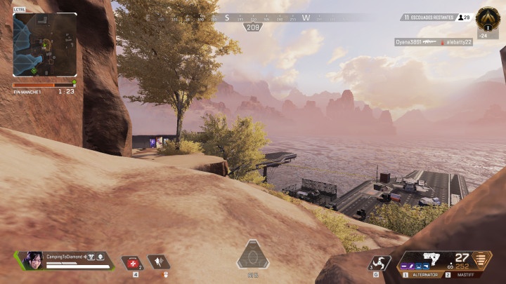

This hiding spot is easy to reach if you know where to start your ascension. In this case it's at the north of the airbase that you'll begin to climb. The path to this hiding spot is short but exposed to any team being in the airbase so you'll need to clear the area before trying anything otherwise you'll be spotted and wont be able to hide there anymore.
Once you've reached the right spot you'll be pretty safe. The only place where someone could see you is at the ends of the lauching ramps. If a bloodhunter scans you don't panic. He might have scanned other teams so try to sound him in order to define his intentions. If he's after you and knows how to reach you (either with grenades / long range shoots or by taking the same path that you took before) you can easily run away by climbing the airbase structure, rushing the door on your left or going north.